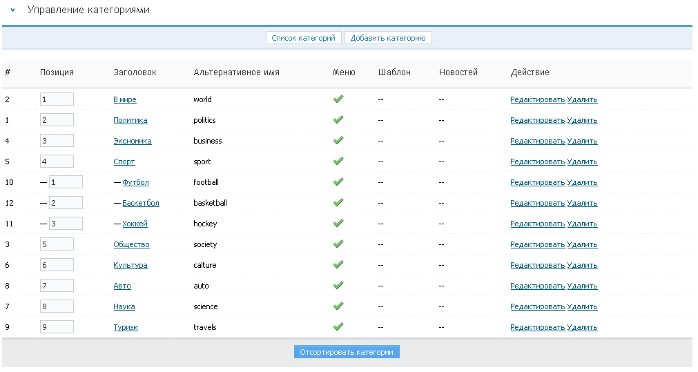

Работа с категориями
Сайты, созданные на базе Next Generation CMS, могут содержать произвольное количество разделов разной вложенности.
Для удобного управления в CMS существует специальный инструмент, который позволяет создавать, редактировать категории, а также изменять порядок их отображения на сайте.

рис 4.1
Добавление новой категории
Для добавления новой категории, нажмите на вкладку "Добавить категорию" (рис 4.2).

рис 4.2
После этого вы будете перенаплавлены на страницу с формой, которую вам потребуется заполнить. (рис 4.3).

рис 4.3
Внимание: поле заголовок является обязательным к заполнению.
Отображать категорию в меню - Управляет видимостью раздела для построения навигации.
Выключенные разделы в навигацию не попадают. В раздел, тем не менее, можно попасть, набрав его адрес в браузере.
Заголовок - указывается название новой категории. Данные заголовка являются содержимым тега Title, которое показывается в заголовке окна браузера.
Названием может быть любая комбинация букв, цифр и знаков
препинания.
Режим отображения ссылок в меню категорий - возможность выбора отображения каждой конкретной ссылки на категорию - всегда ссылка/ссылка если есть новости/всегда текст.
Альтернативное имя - здесь необходимо указать ссылку на данную страницу-категорию. Если поле не заполнено, то URL будет сгенерирован по средствам транслитерации заголовка.
Внимание: ссылка должна указываться на латинице и не содержать спецсимволов и пробелов.
Описание - используется при создании краткого описания категории.
Ключевые слова - ключевые слова для метатега keyword.
Кол-во новостей на странице - определение количества новостей для отображения на странице категории.
Шаблон для новостей категории - выбор шаблонов, которые будут использоваться для данной категории.
1. Создать в каталоге вашего шаблона (предположим, что вы используете шаблон default) создать каталог ncustom - в нём будут храниться "персональные" шаблоны категорий: /templates/default/ncustom/ 2. Внутри только что созданного каталога - создаём каталоги для персональных шаблонов, например - custom1 и custom2. /templates/default/ncustom/custom1/ /templates/default/ncustom/custom2/ 3. В каталоге персонального шаблона необходимо создать следующие файлы: news.short.tpl - отвечает за вывод короткой новости news.full.tpl - отвечает за вывод полной новости comments.form.tpl - отвечает за вывод формы добавления комментария comments.show.tpl - отвечаеи за вывод комментариев
Вывод осуществляется через переменную {icon} в шаблонах news.short.tpl и news.full.tpl
Альтернативный URL - Параметр предназначен для добавления ссылок на внешние объекты (к примеру, на форум) внутри списка категорий.
Внимание: В категорию, для которой прописан альт. URL, добавлять новости нельзя!
Порядок сортировки внутри категории - выбор в каком порядке будут сортироваться новости внутри каждой конкретной категории.
Категория-родитель - вложенность внутри категории.
Настройки плагинов
-
Управление комментариями в новостях категории
- запретить - по умолчанию комментарии в новостях этой категории запрещены
- разрешить - по умолчанию комментарии в этой категории будут разрешены
- по умолчанию - флаг разрешения/запрета комментариев будет браться из параметра "по умолчанию комментарии"
Данная настройка будет действовать для новостей, у которых для комментариев установлен режим `по умолчанию`: